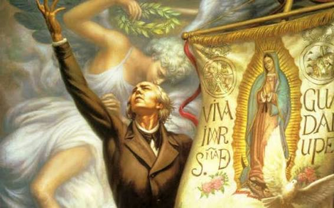
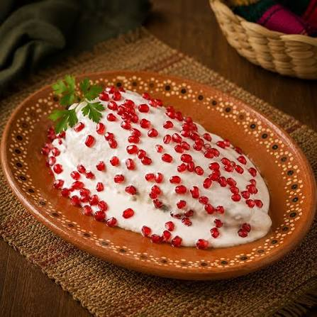

El Grito no fue el 15:
Miguel Hidalgo llamó al pueblo en la madrugada del 16.
Porfirio Díaz pasó el festejo a la noche del 15 para hacer
coincidirlos con su cumpleaños.
Juan Escutia no se aventó:
No existe registro de que se haya arropado con la bandera para
arrojarse al vacío en Chapultepec.
El Pípila es un símbolo:
La hazaña representa el esfuerzo colectivo de los mineros
de Guanajuato, no un hecho individual.

Chiles en nogada para Iturbide:
Monjas de Puebla los crearon en 1821 para agasajar
a Agustín de Iturbide con los colores del Ejército Trigarante.
La Campana se mudó:
La campana original de Dolores está en el balcón del Palacio
Nacional en CDMX desde 1896.
Hidalgo no firmó la Independencia:
El Acta se redactó en 1821, 11 años después de su muerte,
y declaró a México como Imperio, no República.
